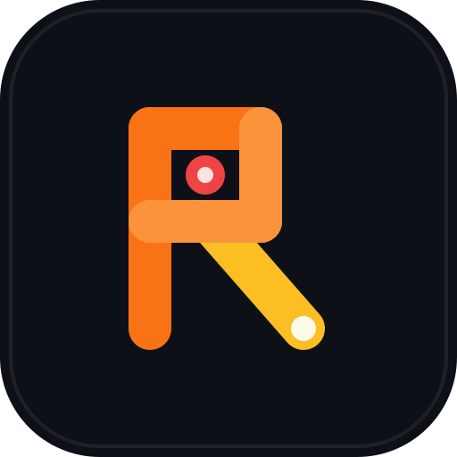

Pratinjau Layar
Pastikan untuk mencentang "Share audio" atau "Bagikan audio sistem" saat memilih jendela.
Pesan informasi di sini

Pastikan untuk mencentang "Share audio" atau "Bagikan audio sistem" saat memilih jendela.